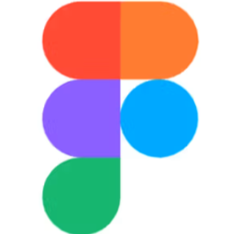

¿Qué es el juego?
Cuadriculando es un juego de estrategia y sabotaje para 2 a 4 jugadores. El objetivo es completar la cuadrícula oculta bajo el tablero antes que los demás, utilizando puntos y cartas especiales para avanzar mientras bloqueas el progreso de tus oponentes. Cada partida pone a prueba la concentración, la planificación y la toma de decisiones estratégicas.
¿Cómo se juega?
Cinco pasos que definen el transcurso de cada partida.
En tu turno, haz girar la ruleta para determinar cuántos espacios podrás desplazarte en el tablero.
Cada jugador comienza la partida con 5 cartas de puntaje. Durante el juego podrás obtener más cartas al avanzar por ciertas casillas o seguir las indicaciones del tablero.
Mueve tu peón según el número obtenido en la ruleta y planifica cuidadosamente tu recorrido.
Puedes moverte dentro de tu propia zona o ingresar a la de otros jugadores para obstaculizar su progreso y disputar espacios del tablero.
Utiliza las cartas de puntaje acumuladas para adquirir casillas de tu color y completar tu cuadrícula personal. El primer jugador que logre llenarla por completo será el ganador.
ELEMENTOS DEL JUEGO
Descubre las piezas que conforman Cuadriculando. Para la construcción del juego se utilizaron diversos materiales, principalmente MDF, seleccionado por su resistencia y facilidad de fabricación. Además, algunas piezas incorporan acrílico, lo que aporta un mejor acabado y refuerza la identidad visual del juego.
Pix
Fundamento
Para la propuesta de diseño de interfaz se analizaron e investigaron las principales características del juego desarrollado anteriormente, Cuadriculando. A partir de este análisis se identificaron diversas cualidades materiales y visuales que fueron trasladadas al diseño de la página web. Entre ellas destacan el uso del acrílico, la construcción mediante capas, las transparencias y la presencia de colores representativos que se superponen para generar distintas percepciones visuales.
Una de las propiedades más relevantes observadas en el material es la relación entre las capas y la percepción de profundidad. La distancia entre estas influye significativamente en la forma en que se perciben las figuras y los colores. Cuando las capas se encuentran próximas entre sí, las formas se observan con mayor nitidez, mientras que los colores aparecen más intensos y concentrados. Por el contrario, al aumentar la separación entre las capas, las figuras comienzan a difuminarse, transformándose en formas más abstractas, donde el color se expande visualmente y genera una sensación de mayor profundidad.
Estas observaciones fueron fundamentales para el diseño de la interfaz, ya que permitieron incorporar recursos visuales inspirados en las cualidades ópticas del acrílico, utilizando superposiciones, transparencias y variaciones en la percepción de las formas para recrear digitalmente la experiencia material presente en Cuadriculando.
Herramientas usadas

